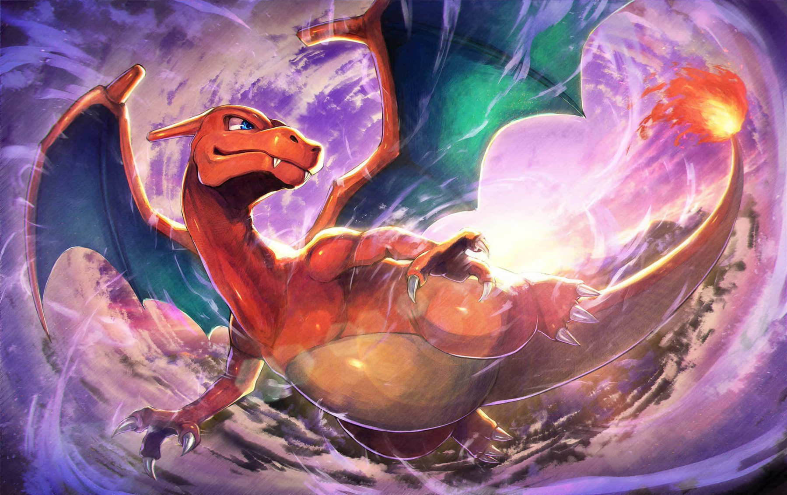

I find myself captivated by the potency of perseverance. There’s a certain magic in the resolve of a determined heart.
Consider the ancient oak standing tall after countless years. Its leaves seem to whisper tales from ages past. There’s a sense of reverence in the unwavering manner in which it faces each new day; through storms and gentle breezes alike. I’m spellbound by the centuries it has witnessed.
I visited Niagara Falls. It has a thunderous grace; the waters cascade relentlessly, a lesson in perpetual motion. The mist that rises is like a veil between worlds, where human toil seems trivial against the backdrop of nature’s indomitable will. Even then, a whole city cropped up around it. We humans, despite all our flaws, can rival the ceaseless flow of water, that shapes the very bedrock. There’s a certain respect for those that embody a life that can only be born of time and tireless momentum.
In today’s world, life moves at a breakneck speed. It seems like there’s a constant rush to grasp at every opportunity before it vanishes. Yet, there’s a yearning within us for stability and consistency. Perhaps true fulfillment lies not in the extremes, but in the journey between exploration and grounding. Perseverance plays parts in both.
I want tend to a garden, discovering joy in the cyclical nature of growth. I want to see seeds become blossoming plants, because I know the commitment to nurturing is profoundly rewarding. I want to see a cliff, and know that I may one day climb to it’s peak. In my eyes, the essence of greatness is born from the marathon, not the sprint. Everything precious necessitates effort. Whether it’s physical health, friendships, relationships, it all hinges on enduring dedication.
It’s stitched into the little acts: watering your plants, sending a text every so often, deciding to work out rather than not. And when you falter, you can just try again the next day. It’s been a revelation, how these minuscule, recurrent efforts help fulfill me.
I will perservere because I know success is no accident.
The truth is that what is right for you will come to you and stay with you and won’t stray from you for long. The truth is that when something is right for you, it brings you clarity, and when something is wrong for you, it brings you confusion.
You get stuck when you try to make something that’s wrong for you right. When you try to force it into a place in your life in which it doesn’t belong. You get split; you breed this internal conflict which you cannot resolve. The more it intensifies, the more you mistake it for passion. How could you ever feel so strongly about something that isn’t right?
—Brianna Wiest
take me back to the city
that i call my city,
where everybody knows my name.
take me back to the people
that I call my people,
i’m a long, long way.
superpower #1
people are scared of doing hard things. i’m also scared. on the other hand, i love the feeling of being scared half to death.
weakness #1
no fashion sense.
i’m a big sucker for quotes, here are some of more favorite recent ones
“Everyone keeps telling me how my story is supposed to go. Nah, I’m gonna do my own thing.”
― Miles Morales, Spider-Man: Across the Spider-Verse
i love this one for so many reasons. it’s like when people around you — parents, teachers, friends, bosses — think they’ve got your life all figured out. they give you all this advice, sometimes without even asking, like, “you should study this,” or “you gotta take this job.” it’s the kinda stuff we all deal with and it’s kind of annoying, right?
but then, it hits hard — “nah.” and then there’s the clincher: “imma do my own thing.” it’s like shouting from the rooftops that you’re the boss of your own life. it’s like, “i got this, thanks.” it’s about chasing what you really want and not just what everyone expects. it’s about taking control of your own story. life is so much more meaningfull when you just disregard expectation and tradition in favor of what’s right. it’s evocative — risqué. just how i like it.
“There’s a moment on the arch of a jump, when you are neither rising nor falling. All you can see is the sky. All you can feel is the air and all you can hear is your heartbeat. That is all you are. Muscle and motion. It’s called the deadpoint. I live for that.”
― Rhianna Pratchett, Mirror’s Edge
it evokes a deep sense of understanding with the present moment, which is why it resonates deeply with me. it captures the state of weightlessness and suspension in time. in this fleeting instance, we are liberated from the mundane realities of life and become one with the sky, the air, the wind, their heart, themselves. it encapsulates the essence of being alive; a distilled concentration of raw human experience. the “deadpoint,” ironically, a term that connotes stagnation is instead a state that is filled with potency and vivacity. a reminder to relish the brief instances where we are untethered, not knowing where we will land, not worried about why we jumped, just living in the present.
“I love you monkey.”
“I love you more.”
“I loved you first.”― The Flash
while the actor is still an asshole, i still love this quote. i first saw it in the mother’s day trailer for the flash. it’s just so wholesome. bantering in the most affectionate of ways, one-upping each other in the only thing that matters. the best relationships are where each person believes they’re giving sixty-percent. and i’ve learned i’m certainly willing to do that — i’m not afraid of being the one who loves the most. and of course, i think it is a beautiful thing, to have loved someone first, to love with all the risk of not being loved back. i also find it quite poetic, even in a movie of a superhero with super-speed, it’s not about being first physically, but the mental race for love, and beyond.
“Life is not always a matter of holding good cards, but sometimes, playing a poor hand well.”
― Jack London
there’s two main reasons i like this quote. the first, the obvious, is that most people are dealt unfortunate cards. (tangentially related, but there’s a song, “poor unfortunate souls,” i heard from the recent live-action little mermaid movie, that i like). i wonder how many people find true happiness, whatever that is. maybe i suck at reading people, but the happy people i meet are few and far in-between. i swear people always find things to do or be to cover up their misery. they can’t accept themselves. everyone has facades. tl;dr everyone needs a therapist (especially me). there are always things to be sad about, but the key is to not let that detract from your overall well-being. well, obviously.
and anyway, i say that, but i still want everything to be perfect. nonetheless, we have to make do with we have, utilising our talents in the ways only we can. the other reason i like the quote is because i was reminded of jack london’s book, the call of the wild. in a gist, it’s about a dog who needs to rely more and more on his natural instinct to survive and especially, to thrive. life is a current, and it’s really easy to get swept away, giving up to the force of the tide. i still want to be that naive boy, who worked hard to get where he wanted to be. everyone wants me to mature. to lose my sense of wonder, to just take everything for granted, to give up my natural instincts.
i wanna be like the hawks, soaring through the skies
but i’m still learning to fly and it’s a lot of work,
johnny
played monopoly, pretty realistic game huh
i want to examine big tech’s role in aspects like monopoly as well as manipulative anticompetitive and antitrust breaches. i’m not particularly well-versed in legal nuances, but these are my opinions nonetheless.
my opinion is that big tech (like many industries) has evolved dramatically in a way to allow them to cover a wide range of technologies such that they are considered a monopoly in practice, but not name. technology has enabled these companies to rapidly expand, gain control, and cement themselves in specific and related fields previously not possible before the advent of the internet.
big tech is defined as the most prolific and dominant technology companies in each of their sectors, primarily software companies. antitrust relates to the legislative powers that are responsible for preventing trusts and monopolies in order to promote competition. big tech companies are described as last movers: the last company in their space. peter thiel, founder of Paypal and Palantir, and premier asshole, frequently mentions how these companies always start as a competitor in a small but growing niche, but eventually gain a large majority in the field and maintains that lead continually and artificially. however the distinction i think - the methods they employ, such as leaving competitors alive but not thriving, expanding into related industries, curbing small startups, etc. are much more nefarious, harder to prevent, and legally unclear.
the largest technology companies, both consumer and enterprise, have similar paths of business growth. apple started with a minimally designed computer, microsoft made a simple operating system, google was a search engine, facebook is a social networking site, and amazon aggregated books on the internet. each of these companies went into a relatively niche, but growing market. after cementing themselves as the leader in the field, most of these companies have never lost their market share after many years of operation. their start is not particularly unfair.
the problem therein lies when big tech eventually gains a monopoly in their field and expands into multiple sectors. software is a particularly interesting technological innovation in that it is interconnected with other pieces of software. while traditionally, this may constitute common traits of a monopoly, software tends to find links that escape this view. alphabet’s start with search engines led to a natural growth towards being an advertising platform. with their acquisition of youtube, alphabet strongly grew their advertising platform subsequently.
apple created the premier smartphone, but their app store nets them 30% of all digital revenue generated on more than half the mobile devices in america. apple creates other devices like headphones that link to their other software and hardware. microsoft’s cloud software, azure, works primarily on pc. their office software is similarly limited to their operating system. they find ways to interconnect their software, such that reliance on one promotes another. it creates a web of dependencies that are very difficult to untangle. this is due to the fact that software is generally expandable and skills are transferable. software is too vast a field for any one company to gain a monopoly, but fragmented enough that companies can gain monopolies in many segments. look at google’s work on mapping the world with Google Maps intertwining with their self-driving car startup, waymo. they would be able to gain a tremendous lead, unexpectedly, and instantaneously, such that legal actions and competitors wouldn’t be able to catch up.
legal definitions are difficult. google no longer defines themselves as a search engine company. they may be a monopoly in that sector, but if they classify themselves as an advertising company, then their market penetration is minimal. apple has a large majority market share in America, but loses to android internationally. amazon is the largest e-commerce site by far, but loses spectacularly to retail. software is interconnected with other internet spaces and physical premises, but definitions are loose. antitrust laws just do not define any of the technical terms precisely enough. google is a search engine, but more searches occur generally on the internet. arguably, amazon’s search on their platform generates even more revenue than Google. deliberation between these concepts and terms are necessary if antitrust regulations want to catch up.
in every sector, companies always have “competition.” From local to large, companies precipitate on weak competitors. locally in their domain, it is almost inarguable that a monopoly exists for most of these companies. google has embedded itself into American culture so much so that searching is called “googling.” bing, firefox, or internet explorer is only used for specific use cases and individuals. amazon is by far the largest ecommerce company, but sites like shopify, ebay, or etsy can be considered competitors. these companies know they have dominance, but leave smaller competitors alone to not be considered monopolies. a famous historical example is ofc microsoft funding apple’s new products in its early stage so they could prop up another competitor.
another issue of participation is that big tech is in many fields which leads to a false sense of competition. google may have search engine dominance, but they also compete in other fields like cloud computing, advertising, social media, hardware, and infrastructure. many of the other large software companies compete in these same exact industries. this overlap prevents any one company from gaining a vast majority of the share of the market in all of the fields. no one incumbent technology stack allows expandable control into other fields. but, despite that, some companies can maintain a lead and others hold on but never thrive. aws leads cloud, but other companies can compete due to their massive amounts of capital, but that doesn’t mean aws won’t lead cloud for the next decade. a web of software companies competing in the same fields leads to competition defined as any software company. google is compared to facebook and not bing. amazon is compared to microsoft and not other online retailers. no one company can be considered a monopoly because software is just so large. while this may indicate that these companies are not necessarily software monopolies, it is still quite clear that it eliminates smaller competition, such as smaller companies and startups.
tech builds horizontally. this means infrastructure, technology, and patents are structured to be developed deep in their field. amazon relies heavily on their servers. apple needs its hardware supply chain control. google’s complex algorithms optimize search. facebook’s pool of data is unmatched.
further, for most software companies, it is working capital and quick acquisition ability that allows them to retain control while skidding federal guidelines. for aspiring startups, like myself, larger companies can simply acquire them. an aggregation of these companies is particularly difficult to prevent. microsoft has bought up a variety of game studios for their gaming platform. facebook has capital to buy upcoming social media platforms. amazon acquires many smaller marketplaces. while this is applicable in any industry, it is especially true for technology companies because so many of them are quick and stealthy acquisitions. there are many acquisitions that go under public or regulatory scrutiny as they are only required to disclose the biggest deals. it looks like any deal smaller than $90 million can go undisclosed, which applies to the majority of acquisitions, and with the significantly easily scalable nature of software, these companies can grow to become tremendous assets. further, hundreds of acquisitions can be more impactful than a singular purchase, but still go ignored. their massive market valuations allow them to buy companies that are not “material” or help them secure impressive employees or patents. even larger deals bypass authorities like facebook’s billion dollar acquisitions of instagram and whatsapp. something here about the large cash flows of big tech, lack of legal definitions for software, and the FTC’s minimal funding and resources contribute to big tech’s infallibility.
another issue i see often is the development of software as a platform. While individual software can grow large, platforms allow the integration of smaller entities and users. apple’s app store is a good example of a private platform that may grow too large. it is simply unreasonable to ask 30% for all digital transactions from their platform. there is a discussion to be had when a private platform should be publicly opened up. in may, 2021, a few years ago, a significant case, epic games v. apple, will force apple to change its anti-steering laws that restricted all external payment options. the growth of platforms and the ability to embed code allows for unfair control of data, payments, and market share that is simply going to be impossible to compete with at any scale. for example, in china, tencent’s wechat messaging app currently has the ability to create ‘micro-apps’ inside the app that allow users to interact with other software for shopping or eating. through WeChat, users can order food, shop online, find tesla chargers, play games, chat with friends, and do almost anything. the development of super-platforms can be dangerous as companies grow larger and have more influence.
there is also a growing reliance from consumers for software. at some point software becomes more entangled with daily life and operations that it is almost necessary to have them. in some instances, social media is necessary for individuals to connect to others. there could be a psychological dependence on some of these apps. unlike other necessities, however, software can’t be logically broken up. after all, some software is purposely designed to aggregate fragmented markets. splitting up amazon’s ecommerce platform wouldn’t make sense as it’s original purpose was to combine retailers. it would be too drastic a change that regulators would have to find alternative options that might not logically or easily exist.
similarly, there is also a dependency of enterprise to software. many businesses, small and large, depend on software. it is telling that much of the fortune 500 is unable to develop in-house solutions for things like content-management systems, cloud storage, or hr.
imagine smaller businesses. companies like doordash grow their hold on small business restaurants. restaurant margins are difficult already, but doordash adds a 30% commission fee, and forces restaurants to use their point of sale and advertising systems. without more competition, restaurants are forced to engage with these ludicrous fees in order to survive. however, competitors can’t arise because companies like dd and ue require large fleets to work. further, they all have similarly large fees with no regulation to push much of it down. it sounds eerily similar to the utility industries, but there is no classification for any of these software companies.
many of these companies can create irreparably disastrous effects on society. we have already seen Facebook’s engagement algorithms create outrage for things like vaccines or politics. facebook’s purchase of oculus and their subsequent rebrand to meta can be dangerous as facebook may eventually gain control of the vast majority of the virtual reality market and the data collection associated with that. there have been many instances of aws, which one-third of the internet approximately runs on, shutting down periodically, losing billions of dollars for companies and losing essential services for people. there is also a history of companies curbing innovation in general to maintain the status quo, whether by outpricing competitors, or buying them out and shutting them down. in the future, there is also the potential for companies like microsoft’s hold on ai and machine learning to create artificial intelligence on a scale that humans or other companies cannot compete with in any capacity.
i took a quick look at oustide america, to other countries since the legal systems and standards are quite different. the european union stringently tries to implement antitrust practices that allow for cheap consumer prices, consumer protection, and ensures companies have low barriers to entry. there is a case going on where amazon is being accused of using its merchant data to compete unfairly. for example, amazon has a program called amazon basics which has almost identical designs to similar top-selling items, but at drastically cheaper prices due to amazon’s supply chain logistics. furthermore, while software is global, usage of funds is not. many tech companies use state aid from other countries in operations elsewhere in order to grow, which can give them significant advantages over other companies. the german federal cartel office forced facebook to stop collecting data without consent, since the mass collection of data is reasonably insurmountable. there is also a growing trend of creating a way to regulate big tech activities before they happen. the issue here is that bt can create software innovations across industries significantly faster than new laws can be set, so there needs to be a uniform way to detect or limit these abuses. china has fined companies billions for exclusivity deals. it has also separated payment platforms and products for ant group, similar to the epic games v. apple case. however, ofc, china’s motives may be more dubious, as many of these restrictions occurred to jack ma, founder of alibaba, after he made negative remarks towards china.
meh we’re screwed
smartphones are such an enemy of creative thinking
if creativity requires boredom, a device that ensures you’re never bored is quite problematic
-sent from iphone
got a new iphone, it’s blue
you ever yell quietly?
the sound that doesn’t escape your lips
instead, reveberating everywhere within
until it runs of fuel,
“nah i’m perfectly fine”
i can hide the pain points,
or i can show and tell,
build skyscrapers or tear them down.
there is no me,
just who i want to be
i’m not who i am, even if it’s all you see
i’d like to think my soul is the real me
a tapestry of emotions; not a skeleton
i don’t like being on video.
i cast spells that are ephemeral.
that effect change in another dimension.
don’t tear down fences if you don’t know what they were put up for, don’t put up fences if you don’t know what you’re doing. neither apply to me. i can just lie anywhere, stargazing. i don’t look at the walls. im only afraid of the sky falling on me. and even then, it’s only because id have nothing to look at anymore. itd be so boring. thered be nothing to look forward to anymore.
I’m an idealist and a realist. I’m a dreamer grounded in reality. I don’t have to dream to make it beautiful. Everything I do is beautiful. I can see my dreams. And they stare back. I know how I will get to the stars. It’s not hopeless. I know when you call me a dreamer, it means that you don’t believe me.
There’s a certain kind of certainty that makes some people so sure that someone else will succeed. I don’t think I possess that aura, but I still rationally believe in my own success. When people say I’m a dreamer, I feel demeaned. I can see my future there. I can see the steps to get there. Why do you think I can’t climb up? I just have to go up and grab it. It’s not that hard is it?
Everyone thinks I’m crazy. I think I’m perfectly normal. Everyone else is insane.
“There’s a moment on the arch of a jump, when you are neither rising nor falling. All you can see is the sky. All you can feel is the air and all you can hear is your heartbeat. That is all you are. Muscle and motion. It’s called the deadpoint. I live for that.”
― Rhianna Pratchett, Mirror’s Edge
before pigeons fly, they take a little leap, knowing that their wings will work. if i dont jump, how will i ever fly? and sometimes, when i have no courage, when there are no words or actions that can soothe me, i just jump. i take a leap of faith. i trust myself to make it. to land safely, in one spot. i jump over my obstacles, my fears, over barriers others place in my wake.
“Everyone keeps telling me how my story is supposed to go. Nah, I’m gonna do my own thing.”
― Miles Morales
no one ever takes me seriously. no one believes me. i want to climb a mountain. i want to reach the highest peak. it’s hard though, when no one is there to support you at any given interval. but, i will live. and there’s no one to stop me. i’m more capable than i can even imagine.
sometimes i think if there was just one person who would genuinely believe in me, and i wonder how much i could achieve. just one star would light up the infinite night.
why does it matter what anyone else says. they would say it anyway.
i want to be right in the things i care about. i want it that way. i want to look at the crowds that gather around me and know that they are are as unnecessary as they were when they gathered around someone else, when i was alone. i will prevail, despite everything.
i just have to remind myself of that occasionally, because no one else ever does
ignorance is really a blessing and a curse
in new hampshire, home to the rednecks, among the sea of trailer parks, i lived and witnessed contentment in simplicity. if you only lived there, you would feel fulfilled. the air was filled with the delicious aroma of barbeques, the laughter and cheers of football games, and people drinking beers on their porch. the background music of daily life wasn’t so bad. leave once and come back and you notice the toxic words in their voices, the loop of marriages and divorces, the blissful unawareness that the world offered anything beyond their community, their trailer parks, their mcdonalds.
i shifted gears and found myself in san francisco, where ambition was currency. here, the proximity to stanford, the budding startups, the towering tech companies had everyone in a frenzy to chase their most audacious dreams, like insects to a light. i felt like life was a race where only grandiose aspirations where the only things to be proud of. relentless pursuit lead to people losing sight of grounded realities. flying too high, just to fall to earth, leaving only a whimper behind.
new york city was a different beast altogether. the hustle and bustle of a melting pot, where people from all corners of the globe flocked with dreams in their eyes. people would search for the simple stability that seemed a luxury from their immigrant home countries. unbeknownst to them, the city had its own undertows and currents ready to tear them apart. i can’t count the number of parents that gave their entire life to their children.
kids from my town would always peak in high school. they thought life was so cool as a kid, just fooling around. they could see from their parents what kind of fate would be awaiting them, but it’s like they just turned a blind eye to it. in san francisco, kids would think life is comprised of only big dreams. that you have to make it big or go home a loser. where risk is all there is to life, and then they aim big and fall harder. and in new york, the immigrant kids are all primed to want a stable life, too afraid to conquer the world, too afraid to leave the city.
then there are those that have never experienced a healthy love, a healthy family, healthy relationships. how would you even know magical things exist if you don’t experience them? people never do a good enough job explaining magic to others. if they did, people wouldn’t make so many dumb mistakes.
and then there’s me. i’ve fallen into all of these traps :) who knows how i’ll end up? and maybe i’m the most ignorant, i want the best of all three of these worlds.
and then there are the perfectly fine people. born into a stable family. pushed into taking their education seriously. have a fine career and family. love and are loved. happy. i guess they’re happy.
this is a poem “dreamlessly” by charles bukowski. it’s about the people in life who have given up. i found it from john weiss' most recent blog post. i think it such a tragic fate, to know your dreams have fallen from your grasp, and to wander dreamlessly.
Dreamlessly
Old, grey-haired waitresses
in cafes at night
have given it up,
and as I walk down sidewalks of
light and look into windows
of nursing homes
I can see that it is no longer
with them.
I see people sitting on park benches
and I can see by the way they
sit and look
that it is gone.
I see people driving cars
and I see by the way
they drive their cars
that they neither love nor are
loved -
nor do they consider
sex. It is all forgotten
like an old movie.
I see people in department stores and
supermarkets
walking down aisles
buying things
and I can see by the way their clothing
fits them and by the way they walk
and by their faces and their eyes
that they care for nothing
and that nothing cares
for them.
I see a hundred people a day
who have given up
entirely.
If I go to the racetrack
or a sporting event
I can see thousands
that feel for nothing or
no one
and get no feeling
back.
Everywhere I see those who
crave nothing but
food, shelter, and
clothing; they concentrate
on that,
dreamlessly
I do not understand why these people do not
vanish
I do not understand why these people do not
expire
why the clouds
do not murder them
or why the dogs
do not murder them
or why the flowers and the children
do not murder them,
I do not understand.
I suppose they are murdered
yet I can’t adjust to the
fact of them
because they are so many.
Each day,
each night,
there are more of them
in the subways and
in the buildings and
in the parks
they feel no terror
at not loving
or at not
being loved
so many many many
of my fellow
creatures
this is such a scary fear. to have worked, but to have worked for nothing. to have loved, but loved for nothing. to have hoped, but hoped for nothing. and to have nothing to show for it, and nothing to live for it.
and it’s not like it just affects the poor, although it probably does, unproportionately. the rich just drive fast cars, not knowing where they’re going. or maybe they were born like that, to no fault of their own.
or maybe i’m projecting. regardless, happiness and satisfication in the us is going down. it’s tragic. i don’t want to be wander dreamlessly. it would be so tragic.
i want my life to have upwards momentum. i want to propel myself in a direction i would never regret. i want to dream. i want to love, and to be loved. i want to exist, not to just exist, but to exist for a reason, for myself, for someone.
until an asteroid,
johnny
from ancient earth, where the very air shimmers with mystic dust, titanic golems stride forth and sinister gargoyles take wing through the stygian night. from the very core of the planet, i am born, a colossal monolith of stone, kin to the living earth, bound by sacred ties that have endured since the dawn of creation.
unlike my brethren i differ; i bow to no crown, no scepter. the earth and i are one, and within her labyrinth depths, i am entombed in an eternal seam of bedrock and rare minerals.
the rumblings of my awakening stir. the earth trembles as i prepare to emerge. i have a will with the soul of primeval forces, i unleash cataclysms - avalanches thunder across the land, rivers forsake their ancient paths, and shallow valleys become bottomless chasms.
as the world quivers and quakes in awe, a silence descends, and through the swirling maelstrom of dust and stone, i emerge. with a mere shrug, i cast aside boulders colossal enough to fell mountains, as though tossing aside a light blanket. from the stones and the soils, i mold my form, taking the visage of a mortal beast.
i am paragon of nature’s wrath and a harbinger of her tender caresses. i am the sculptor, the artisan, and the chisel; a living statue.
the prodigal son is here
before the rise of the dawn, with the sun yet to greet. i am a drummer marching to my own beat. i am pacing myself on a marathon run. i have went down many wrong roads on my hunt. time and time again, frequently shunned. through valleys and hills, with heart my guide and myself as the fleet, i have sailed many tempestuous seas. i have made people cry. and i have made people seethe. still i hear the roll of the drum. thundering is the beat of my heart. from the victories i have won. i take the stars as my witness. of the tale i have spun. i will continue to march, the universe be stunned.
i enter the next phase of my life. i’m in the dawn of my youth. the sunshine gleams off my brows, into my sight. i’m rocking a cradle of dreams. i’m swaying with the daisies and chasing the breeze. my heart flutters wild, like leaves on the summer trees. i’m living in the nyc suburbs. there is the hint of nature.
i’ve had an encore of laughter and a soliloquy of cries. i tasted the thrill of firsts, my life view is expanding like the broadening skies. i am working towards my prime.
i’ve been thinking a lot about my past. i watched past lives; it wasn’t too relatable to me in the romantic aspect, but a central theme in the movie that spoke to me was the message that things don’t have to be special. the female lead immigrates from korea to nyc because, ‘koreans don’t win the nobel prize in literature.’ she has big hopes and dreams, leaving behind her best friend (whom she has a crush on). years go by. she goes to a writing retreat and meets a jewish author there. they end up living together to save on rent. she marries him, for a green card. years pass. she is happy in her marriage, but her husband has doubts that he isn’t any special.
when her old best friend comes to nyc from seoul, they reconnect. the movie talks about how the story of childhood friends reconnecting decades later is so special - so unique, and clandestinely serendipitous. there is little drama; she cuts things off and stays with her husband. because even if people aren’t a perfect match, love is about everything that comes with being together. people become special to each other.
in the end, she wasn’t a wildly successful author and she and her husband trudge by with a happy life in their modest apartment in brooklyn. she “settled” in career and love, but is fulfilled and happy. interesting.
for me, the feeling of being special is tantamount to the peak of what life is about. i want to be unique. i want to be special. when i work, i want what i build to impact the world on a societal basis. i want to make waves, like the entire ocean folding over. and when i love, i want to be the perfect pair, like the sun to the most beautiful tranquil lake. the calmest surface, shimmering to the heat waves. i want to be the best brother i can be, the best son, boyfriend, engineer, whatever other roles i will play. i hate the idea of being replaceable. i don’t just dislike it, i loathe the idea that we are destined to be ordinary. normal.
the thing is, i do think it’s true. at work i’d be a nothing more than a tool. i haven’t always been the best son, and i definitely could have been a better brother. relationships end, and people will move on and find other people. people are replaceable. dreams are like clouds falling to earth. and while i believe most things are like this i’ve come to realise that there’s nothing wrong with that too. it’s still special.
even with that, i refuse to accept my fate. i want my life, my love, my work to last to time immemorial. i will always be a first-rate version of myself, instead of a second-rate version of somebody else. and it’s hard. really hard. comparison is the thief of joy and it is always there. i used to always want to fit in, but sometime over my life, i realised fitting in was standing out. i want to be special. i hope i can be. or will i just be another asian tech guy?
so that’s why i didn’t love past lives too much. i don’t like settling. i will achieve my happiness in the exact way i want it, all the time. i really hate being beholden to other people’s standards and traditions and expectations. on the other hand, i watched the new spiderverse movie and that was amazing. everything was amazing about it, but especially the idea that we should fight for our own future the way we want it. we are only special if we work for it. i vibe with that.
my goals going forward have shifted. before i was trying to make it in this world. now i am determined. i have things and people in my future that important to me. here is a changelog/schedule of different things:
this phase will probably last until i acquire said house. then, we’ll change a few things. i’m gearing up for my prime. in most things, you can reach the 99th percentile just through hard work, but i want to find the thing i’m destined for—best in world. i want to be a dragon. i’m learning to fly. i want to spread my arms out and soar down the mountainside, feeling the wind under my wings.
life isn’t beautiful
i refuse to believe,
we all have a place on this earth
i know
that dreams are destined to die and
that hope is worthless
i refuse to believe
(read lines bottom up afterwards)
i’m… i’m okay now, this is just a part of life; our favorite song is playing in the background.
i hear the words, “you are imperfect, permanently and inevitably flawed. and you are beautiful.”
“do you even love me?” i whisper, in tears.
my battery is at one percent. just maybe. i dial her number.
nothing happens.
i pull the trigger.
(now read lines backwards)
random thought about learning:
“gifted” kids are placed in accelerated programs as early as elementary. in middle school they will continue to be gifted because they learned more relative to their peers. same in high school. same in college. some people are lucky; some people just need an honest chance.
a heavy truth
destined to lose
made to feel hopeless
told to hope less
drunk on a feeling
with the stars in the sky
public markets are effectively for dumb money because they’re essentially set up to take advantage of investors. unless u wanna abuse those losers.
someday when the future meets the past
when your hope is dangling by a string
i’ll share in your suffering
just give me reasons to believe
that you would do the same for me
and when the sun starts setting
the world goes cold
night is falling
see the stars alight at night
constellations in the sky
like the distance between your eyes
the universe in your pupils leads the way
the moon is glowing
i’ll make starlight circle the room
thoughts on doing hard stuff:
it’s funny cause i get different advice depending on who i ask. some people always tell me not to burn out because they’ve seen other people burn out. “there’s never a limit where you can stop grinding, so it’s not worth it to chase highs.” and when i ask others, they tell me, “if you’re struggling with x, read y, just do z, you got this.”
it’s like they don’t even consider failure. those are the people that even fall upwards. im jealous.
i make it work. like magic. people always doubt everything. what they don’t know? im just a loser that puts in so much damn effort. i can conjure anything.
thoughts stir in the night,
shadowing the moon’s soft light,
sleep’s elusive flight.
Lying in bed, you gaze at the ceiling, swaddled in the dark quiet of your room. It’s late, the world outside is sleeping, but you… you are awake. The day has faded away, the bustling sounds of life have quieted, the light has been replaced by the soft glow of the moon. And yet, despite the tranquil vibe, your mind refuses to cooperate. It buzzes, hums, races - it remains immersed in a sea of thoughts that you simply can’t silence - it leaves you to drown.
The perpetual storm seems to crescendo during the night when distractions wane, and you’re left alone with your mind. Ideas, worries, plans, regrets, fantasies, memories, all whirl in a ceaseless torrent, a kaleidoscope of thoughts that keep you pinned to the present, unable to drift into your dreams.
Each night, you find yourself wrestling with existential inquiries or obsessing over minor details from the day’s happenings. Your mind gets ensnared in hypothetical scenarios or rehearses events that have no certainty of occurring. At times, it’s as though your consciousness is a stage and each thought a relentless actor, delivering monologues long into the night, refusing to exit and allow for any intermission.
Anxiety and worries become magnified in the quiet of the night, their weight growing heavier with each passing hour. The pressures of the past and the uncertainties of the future vie for attention, the abstract fears seamlessly intertwining with mundane worries.
This is the paradox of your restless mind. At the precise time when you should be winding down, letting go of the day’s worries, your thoughts become louder, more insistent. They tug at you, each demanding attention, and keep you from the rest you need. I just want to go to sleep.
Among the multitude of names, is mine, echoing through the corridors of time. Will it make a resounding sound, etching itself indelibly into the collective consciousness, or will it die in a whimper?
“Johnny,” - a name carrying the weight of historical religious reverence. “God is gracious,” they say. Repeated in lullabies and anthems, whispered in classrooms and shouted in arenas, it transcends. For some it’s a nickname, but that’s my name. For me, it’s never about what they call me, but what I answer to. Call me and I will part the sea for you.
Then, “Zeng,” a name tethered to deep roots in eastern heritage. It hints at a lineage dating back to the ancient kings of the Xia Dynasty, who did something amazing and probably quite refined, I’m sure. A tethered line, an unbroken chain—of royalty.
“What’s in a name?
That which we call a rose
by any other name would smell as sweet.”― some dead bard
Names are for products—ways to remember things easier by or to provide classification. Like the selection of a restaurant menu are the names, but the food items taste delectably different at each location. Names are for people to pattern match on. I wish to be no such structure.
Like tradition, I can’t fathom why some things must be so unchanging. Not a single Chinese person has ever cared what their ridiculous last name has ever implied. The years of imperialism are over. Your family name means less than the dirt you tread on. I wish I could choose what I stand for, instead of being bound by the dead remembrance of a pathetic ruler. Times change.
Google was originally Backrub. Enough said.
Until you get married because then being bound by name is very much more symbolic, beautiful, and meaningful.
“Revolutionary is our baseline. Different is our first step. And radical means we’re just getting started.”
― nclud
it’s midnight
spicy rigatoni
the onion
cries silent tears
garlic sings
a pungent love song
fills the ears
the tomatoes
add a blush of dawn
in the heated fray
as i
gently stir all your worries away
a drizzle of olive oil
a taste of the vine
a secret ingredient
aged through time
(just vodka, although not yet)
a pinch of salt
a dash of spice
added with care
measured precise
soon, a shared glance
over a shared meal
in simple words
in simple flavors
a sizzle and pop
a bubbling brew
every flavor whispers
‘i love you’
[redacted because it’s 5am and i was bored and there was too much passive aggressive ranting]
tl;dr0 i liiike first principle thinking
tl;dr something abt the us curriculum and how to educate kids
tl;dr2 if you took any concept in the world today and judged it based on it’s merit rather than traditional or cultural presence, you’d likely find a significant difference. the world is broken, really, isn’t it? i hate tradition, i really do. i’ll go out of my way to do everything the way i want to.
tl;dr3 nvm, cause if everyone thought like me, they’d be as stupid as i am. the world be doomed. it’d end in like a week.
outages are funny, aren’t they. i’ve built a total of 2 status pages throughout my life. they are very easy to do… a couple of integrations and you’re done. except, people, all these companies, use atlassian statuspage. weirdos.
especially because status pages are mostly for high-level facing users, while more advanced incident reporting tools are critical. why pay like $20k/yr for it. beats me. sounds like atlassian needs basic competition.
there is an old saying that jesus’s greatest miracle wasn’t turning water into wine or raising the dead. it was being a 30-year-old with 12 close friends.
friendship became a casualty of growing up.
people suck at choosing side projects for cs for whatever reason (personal, for job apps, for college apps, etc.). here are my thoughts on that.
first there are learning projects and then there are practical projects. the former is stuff like classwork, basic stuff like rubicks cube simulator, or otherwise fodder projects. don’t do these. if you really want to do these, i’d recommend doing stuff like research or open source software contributions.
instead, choose to make stuff that actually is practical. one good way to measure this is to guess how popular your project will be.
one tip is to pick a niche and make something for it. for example, if you created a pokemon showdown ai, then you’d likely get a lot of traction and interest from the community. also the competition is weaker, where basically the best ai atm is this kid’s bot. i’m sure you could do a better job. you’d get a lot more traction, usage, and metrics to show off. i would say this would be a great side project.
another example. this guy made a honkai: star rail herta fan website and it is completely memey, simple, but fun. but it still has 80 stars on github and it reaches people on reddit and twitter. more reach. and your project has value. in this example, people are used to fan-art, but not silly sites, which makes it perfect.
on a side note i found this youtuber’s project and his crappy startup, ratemydorm. see, again, it’s a good project and has lots of traction 👍. just don’t ever think a dorm rating project has any traction as a venture-funded startup… it was good for youtube views, but not much else.
idk thats about it… i should write more on this later because 93% of side projects seem like regurgitated garbage.
space is really cool because it’s big. like, really, really big. so big, we can’t even begin to truly grasp its size. 93 billion light-years in diameter. expanding at 70 kilometers per second per megaparsec. there’s so goddamn much to see and discover in our universe to uncover. stars, galaxies, black holes, dark matter, and mysterious things that are waiting out there for us to find them.
when you look up at the sky, you see light from stars that could be billions of years old. you literally look back in time. it makes you realize just how small your problems can be.
space exploration is really exciting. we’ve been to the moon, and now we’re going to mars (kinda) and maybe even so much further one day. these missions aren’t just cool adventures like a billionaire’s random pastime, they’re also a way for us to learn more about the universe. every time we send a spacecraft out there, we get lottsa new information that helps us answer big questions. where did we come from? are we alone in the universe?
and then there’s the idea of living in space. space-themed video games, books, movies. a fantasy that we could lowkey be a real thing in one day.
but its not just about exploration and big ideas. it’s also really important for our everyday lives. without satellites, we wouldn’t have things like GPS, weather forecasts, or television, and a bunch of other things (you can google them).
and of course, space is just beautiful, thereotically and practically. in the real world pictures from space missions or telescopes show us immaculate depictions of nature: colorful nebulae where stars are born, galaxies spinning in the vast emptiness, comets streaking across the sky. even just looking at the night sky from earth is breathtaking (as long as you’re not in the city).
thereotically, we have beautiful equations that could begin to help us understand how exactly our universe works. my favorite is einstein’s field equations from general relativity.
in physics, space is not just an empty space where events happen. instead, it’s dynamic and interacts with the matter and energy it contains. this idea is basically captured in general relativity.
einstein’s field equations are a set of ten interrelated differential equations that describe how matter and energy in the universe curve spacetime. the curved spacetime, in turn, tells matter and energy how to move. these equations are typically written something like:
Gμν = 8πG/c⁴ * Tμν
here, Gμν is the Einstein tensor, which encodes the curvature of spacetime. Tμν is the energy-momentum tensor, which represents the distribution of matter and energy. the symbols G and c are the gravitational constant and the speed of light, respectively, and π is 3. while technically more complex, just think about how beautifully an equation represents some essential part of the universe.
when they can be solved, they provide insight into the behavior of gravitational fields, such as those around stars, galaxies, and black holes. cool stuffs.
one of the most famous solutions to einstein’s equations is the schwarzschild solution, which describes spacetime outside a spherical, non-rotating mass like a star or a black hole. the solutions to these equations are at the heart of our understanding of cosmology and the large scale structure of the universe. plus, it’s just really cool. i wish i had a lifetime to dedicate in service for this.
but yes, space is pretty cool. i just want to know what my role in the universe is.
until an asteroid,
johnny
i was trying to think of a slogan for myself and this would have to be it (for now).
putting one foot in front of the other embodies the essence of progress, representing a steady and deliberate movement forward, no matter how slow or arduous or depressed the path may be. we are our own pathfinders.
life, like walking (or running), often requires us to face challenges, obstacles, uphill climbs (plenty of those). yet, lets consciously choose to put one foot in front of the other. to create opportunity out of dirt.
it represents perserverance. it represents resilience, persistence, and an unwavering commitment to our goals. it is a reminder that even the longest journey starts with a single step: that our journey is made up of many small, determined actions.
it is a testament to the human spirit’s capacity to navigate adversity, to keep moving forward, even when the end of the journey is not in sight. with curiosity as our fuel, we are travelers, making our way in this world.
some people are obstinate like the recurring night
their thoughts are like winter: frozen and stark
clinging to notions; as stubborn as bark
springtime’s bloom calls for a tender shift
for the minds closed like fists, a gentle lift
like sunrise, to change, is a beautiful sight.
what is friend.
meadows of laughter, slopes of jest, walks he, immersed in solitude, bored, but no rest, in frolicking crowds, amidst jovial delight, a connection that lacks, a spark without light. there are that smiles that glow, and eyes that shine, realms of warmth; none are mine the words they say, the tales they share, to me: a hollow echo, in the vacant air.
i need an emotional link, a tether unseen, beyond stupid shared interests, or places we’ve been. an understanding that delves past the skin, to the shared human experience, dwelling within. so, to the stars, my silent plea, a friend, a confidant, to help me see, a painting of life, the colors blend, and drawn is the meaning of (friend).
a while ago, someone showed me their friend’s blog post about dragons.
the idea of dragons are those people that always seem to not just be better than you, but seem to be unreachable—on another plane. i really liked the post and it somewhat deeply resonated with me.
i have this problem too, but just slightly different. in life, there is a pinnacle in any field. these are the top, undisputed people in the field. we’ll use the example of chess: the grandmasters and super grandmasters of chess.
however, i price my pinnacles at the level which purely effort can take me. this is to delineate a goal for me. the people that i think are the dragons. of course, other people differ. even super-gms defer to magnus carlsen (standing above the competition by 50 elo FIDE rating, whereas 2nd-3rd place is a margin of only 5).
i’ve realized, these pinnacles are still extremely high. so high in fact—that people believe them impossible. and rational actors don’t attempt the impossible. except, many of these things are do-able. very do-able. they just require thousands of hours of work.
i want to be at the pinnacle at everything i enjoy doing. with the important caveat that it makes sense to pursue it. as long as i tried my absolute hardest, then it was a good effort.
however, most people also forget they are unique. everyone has their own subset of experiences they experience. you’d be surprised at just how rare some things are: how rare you are. the key to becoming a dragon (excluding pure genetic/nurture background types, although that counts as unique too) is to utilise these experiences. make your experiences build on each other.
i was watching a few startup interviews and what ticked was the surprising position some of these founders were in. a construction worker that learned to code could build a billion dollar business combining the two industries. only when you have that insight at the pinnacle of each field can you see what should be obvious. you can see things other people miss. it’s like magic. anyone can perform magic. i truly believe this.
still, i wanna be a dragon. it’s not jealousy. it’s just the fact that i’m not reaching my full potential. i want to fly. it’d be such a waste to have never felt the air under my wings.
okay, it’s jealousy too and some regret. jealousy that other people took up the grind and regret that i gave up too early. the temporary dopamine is nice, but yknow i absolutely live for that delayed gratification.
see you sometime,
rushhour
emergent gameplay is my favorite type of gameplay in video games, by far. it’s also one of my favorite things about life in general, but we’ll get to that later.
warning: long-winded and not too organized (and a bit nonsensical), but passionate!
emergent gameplay (like emergent properties) occurs when simple (or complex) rules work together to create new, unexpected outcomes. i also group things like meta-breaking, easter eggs, and experimental gameplay into here.
the core enjoyment for me here is multiplayer, with human interactions creating immense emergent options, and i cite Dota 2 and Team Fortress 2 as the best example. Dota 2 of course has a single map, but more than a hundred heroes and hundreds of skills. by quick maths, that’s ((123! / (5! (123 - 5)!)) * (118! / (5! (118 - 5)!)))/2 unique 5v5 hero combinations. that’s 18 quadrillion drafts. and that’s not to mention the same combinations have even more possible ways to play them out. and of course the expansive item shop, and talent system, and map workings. even the user created arcade (and minigames) have immensely fun stuff come out of it (like the entire auto-battling genre, and my personal favorite, overthrow). there are even heroes that can copy the skills of other heroes… immensely fun. basically infinite combinations. always a new situation.
for Team Fortress 2, the interactions and wide variety of weapons along with the 16v16 close nature of the game leads to insanely fun mechanics, such as demoknights, a billion ways to spawn camp, rocket jumping, trickstabs, sentry gun locations, duo medics, etc.
Noita is another fascinating showcase as well, but is, of course, singleplayer. it just throws in a bunch of elementary spells and equipment and ways to combine and mix them (like a programming language) and you can go all out. usually, it is quite hard to balance these sort of games, and Noita makes no attempt to. don’t forget about the falling sand engine it’s based off of… literally pixel by pixel interactions to create an epic emergent simulation.
Path of Exile, its passive tree and skill gems, also embody this well. Gradually emergent gameplay is how even the most casual of players fall in love with complexity. small, easy skills. one or two choices. then harder, complex, and more variety. i love these types of games. you can kill galaxy destroying gods with a self-explosion build, or a ring of fire while you afk, or a chain reaction of elements, or min-max with 1 hp, or any other wild combination of things. not to mention the extremely fun and time-consuming crafting system which just completes the game. and leads to loot explosions. i love loot.
then there’s the element of breaking the game—nonlinear gameplay, such as choosing to kill or spare Bleda the Hun in AOE2, fun mechanics like finding ways to kill your sims in Sims or pushing your enemies to death in Swords and Sandals. it is similar to easter eggs, but these are actionable and optionally part of core gameplay. this type of gameplay punches above its weight, and elevates games.
then, there’s the experimental behavior of games, like Superliminal’s resizing feature. it can be items or mechanics like the Portal Gun. It can be new genres like battle royale and it can be an old genre with a new spin. it can be mods, texture packs, or shaders. it is being experimental only because it is new, but crucially it is no excuse for bad gameplay. this is what players exclaim to their friends about. it just takes a slight spin to create something amazing. minecraft hunger games led to battle royale. a small spin on mafia and twitch popularity led to among us. small, unrelated things can be just the right ingredients for something amazing.
emergent gameplay is my absolute favorite mechanic, if we can call it that. outside of games, it stands alongside other (albeit simpler) principles i enjoy, like the butterfly effect or the golden rule.
this is why when companies lose money on end and people clamor for their end, they don’t understand the simple brilliance of emergent discoveries in their business models. it’s a quantifiable (but hard to quantify) metric. magic is priced-in.
when web-novel authors introduced pay ahead for chapters, webtoons took that and ran with it. when the gig economy started, people laughed and laughed. and then it blew up. and the sharing economy. and bitcoin and crypto.
in hindsight people point out that food delivery worked because people had phones now. no, it worked because of a million other reasons. mostly unintentional. they originally paid their own drivers, but then they realized they could just take the tipping culture and take advantage of it. only chinese and pizza places were capable of takeout, and they said restaurants wouldn’t sign up. however, restaurants adapted; they were perfectly willing to, but they just didn’t even think it was possible. they added on service fees and subscriptions, when originally people would’ve been outraged. some of it is natural, some of it is them creating a solution to their own problem, but regardless, it is emergent. and it is brilliant.
sometimes, you don’t worry about whether it will work. you just go and build it. and be ready to pivot, because you could come across the most serendipitous of discoveries.
HOWEVER.
while i like games with this sort of emergence and i really find interesting how this type of stuff comes about in real life, i do not particularly abide by this principle myself. it is just too rare to come across, so relying purely on that is foolish.
in the market you work in hard maths and concrete principles. in chess, the cardinal rule is not to expect your opponent to make any particular move. in love, you cannot just wish for it to work out. in reality, hard work, cleverness, and perseverance can make it work most of the time.
but those truly brilliant moments come unexpected and often from the arrangement of unrelated, simple things.
a fun rule of thumb is that say you were given the initial state and asked if the final outcome was even imaginable. if it can be even be dreamed up, then it is not emergent.
emergent properties are the outcomes that are beyond even our wildest dreams.
beware dizziness
relatively easy,
there’s an outer main ring and an inside portion. positioning (hard-coded, but not too hard to make dynamic) the inner layers makes for the 3d effect (purely visual sprites).
magic is in the cubic-bezier curve defined by four parameters, 2:2, time:position states. inside and outside parts are synced. we use colored svg paths so we can switch the colors up easily. keyframes to smooth and delineate our angles.
testing out private posts
link below:
it is an encrypted, self-contained (no external dependencies) HTML file containing the ciphertext, initialization vector, and salt needed for decryption using the Argon2 key derivation function.
possible future uses are personal uploads of passwords or texts like my social security or login details, passport photos, secure file transfers, pictures of stuff…, private journal entries, personal writing, etc.
it will be accessible from anywhere with internet access. easily accessible, but still immensely secure.
content deleted and site redone. again…
for the last time though.
posts are now saved to the wayback machine (internet archive) as well as automatically updated to one of my github repos.
i.e., no more permanent deletion
until an asteroid,
johnny